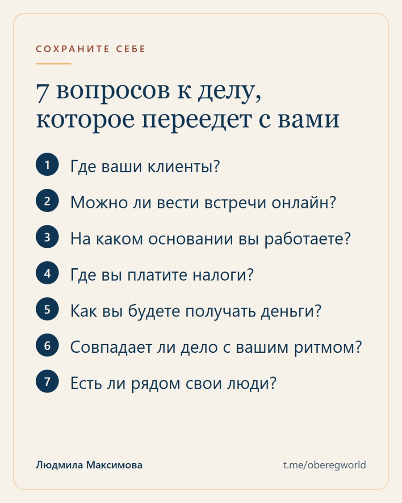

Жизнь и дело за границей
Бизнес без привязки к стране: что проверить предпринимателю после переезда
Двадцать лет я живу в Турции, и двадцать лет у меня здесь своё дело. Поэтому жизнь предпринимателя в чужой стране я знаю не понаслышке. Рассказываю, на что смотреть, если хочется дела, которое не привязано к одной точке на карте.

Коротко
Открыть привычный бизнес на новом месте трудно: другие законы, другой рынок, нет связей. Поэтому многие после переезда ищут дело, которое можно вести онлайн и не начинать заново при следующем переезде. Но «онлайн» ещё не значит «из любой страны»: у каждой страны свои правила, и их стоит проверить до старта. Ниже семь вопросов, с которых я бы начала.
Почему на новом месте так трудно начать
Открыть своё дело в чужой стране сложно, и я знаю это изнутри. Незнакомые законы, документы на другом языке, нет опыта на местном рынке и нет связей. Чтобы начать с офисом, сотрудниками и складом, нужны время, связи и готовность рисковать.
К тому же рынок меняется быстрее, чем успеваешь перестроиться. Поэтому после переезда многие ищут дело, которое поедет вместе с ними. Второй магазин или офис для этого не годится.
7 вопросов к делу, которое должно переезжать вместе с вами
- Где ваши клиенты? Если покупатели живут в одном городе, а вы в другом, дело привязано к месту. Хорошо, когда клиенты и партнёры могут быть в любой стране.
- Можно ли вести встречи онлайн? Переговоры, презентации, обучение. Если без личного присутствия никак, это не дело без привязки к стране, как бы его ни называли.
- На каком основании вы работаете там, где живёте? У каждой страны свои правила для иностранцев: что разрешает ваш вид на жительство, нужно ли разрешение на работу, как оформить деятельность. Это вопрос к местному юристу, и задать его лучше до старта.
- Где вы платите налоги? В России налоговое резидентство определяется не паспортом. По общему правилу налоговым резидентом считается тот, кто находится в стране не менее 183 календарных дней в течение 12 месяцев подряд, а гражданство при этом не критерий. У страны, где вы живёте, свои правила. Между странами бывают соглашения об избежании двойного налогообложения, и для их применения ФНС выдаёт документ о статусе налогового резидента. Разберите это с бухгалтером, который знает обе стороны.
- Как вы будете получать деньги? Удобно ли получать вознаграждение в стране, где вы живёте, в какой валюте и с какими комиссиями. Скучный вопрос, который потом бережёт много нервов.
- Совпадает ли дело с вашим ритмом? Если партнёры живут в разных часовых поясах, встречи могут выпадать на раннее утро или поздний вечер. Посмотрите, как выглядит обычная неделя. Презентация покажет только праздник.
- Есть ли рядом свои люди? Наставники, команда, люди, с которыми можно обсудить ошибки. После переезда одному тяжело вдвойне, и свои люди рядом очень выручают.

Дом — это не только адрес. Это состояние, когда ты на своём месте.
Как это устроено у меня
Моё новое направление, партнёрский бизнес в wellness, ведётся онлайн. Встречи, презентации и обучение, как правило, проходят в Zoom. Партнёры в моей команде живут в разных странах. Условия для партнёров в разных странах могут отличаться, поэтому для страны собеседника я уточняю их заранее, чтобы обошлось без сюрпризов.
Моё утро начинается с прогулки вдоль моря, потом кофе и завтрак. Это святое. Дальше ноутбук, встречи и звонки. Мне важно самой решать, где и когда работать: могу поехать с семьёй, могу одна.
Не стану обещать, что так будет у вас: каждый собирает свою жизнь сам. А о том, как выбирать новое направление рядом со своим делом, я подробно написала в статье «Второе дело рядом со своим». Если вам предлагают сетевой бизнес, сначала прочитайте, как отличить его от пирамиды.
Переехали и думаете о деле, которое поедет с вами?
Давайте познакомимся. Напишите мне в Telegram или WhatsApp, я отвечу сама и приглашу на онлайн-встречу на 30–40 минут. Условия для вашей страны уточню заранее. А если пока хочется просто присмотреться, загляните в мой Telegram-канал: там я показываю, как живу у моря и строю второе дело.
Источники
- ФНС России. Я являюсь резидентом РФ и одновременно другой страны. Налоговый резидент по пункту 2 статьи 207 НК РФ. Страница обновлена 24.11.2026, прочитана 24.11.2026.